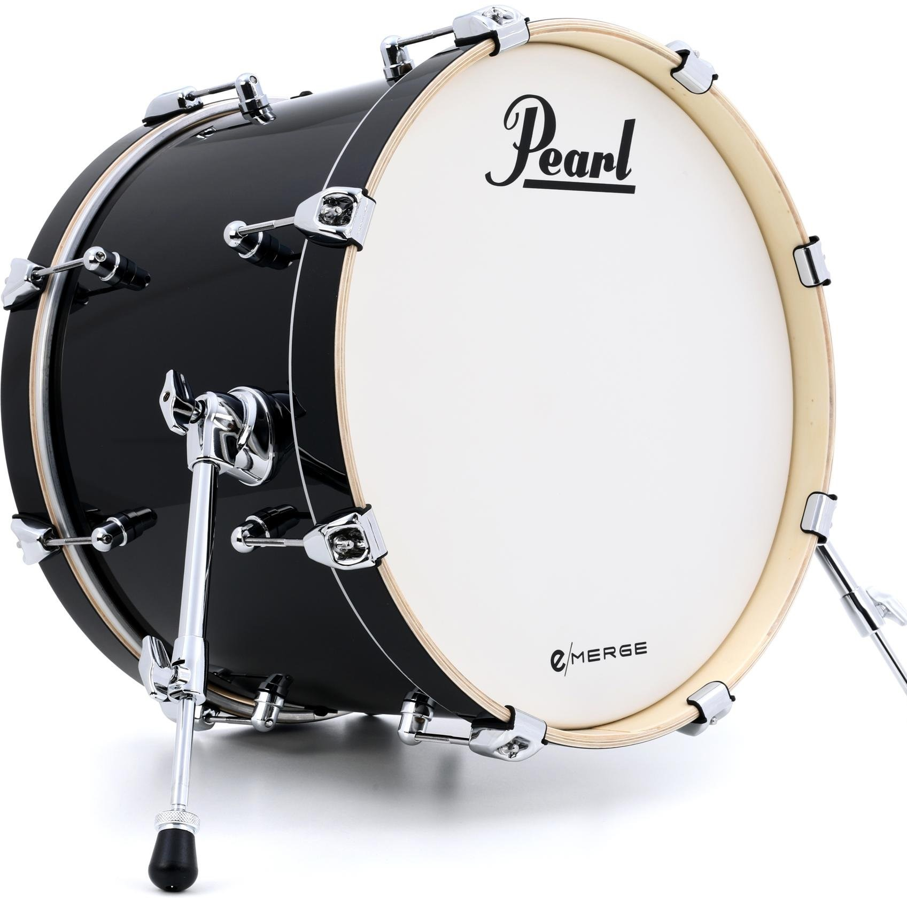

Drums
Drumming is more than just a musical instrument; it has a variety of uses. Drumming, according to most people, bridges language, cultural, racial, and gender divides. Apart from that, drumming provides psychological benefits, such as assisting the mind and body in connecting to the Earth's vibrations. These characteristics, along with a slew of others, have made drums the most popular musical instrument among the general public.
The primary role of the drum is to resonate with the vibration of the head. The larger the volume of the resonating body, the lower the characteristic frequency, and the easier it is to resonate in the lower frequency band, while the smaller the volume, the easier it is to resonate in the higher frequency band.
John Bonham
Famous Drummer
Hard-rock giants Led Zeppelin's rhythmic force was John "Bonzo" Bonham. His thundering proto-metal grooves (Whole Lotta Love) and echoey, cacophonous breaks (When The Levee Breaks) created a tectonic shift in rock'n'roll, swiftly elevating him to near-mythical status among drummers. Bonham's heavy-handed fills and high-octane enthusiasm became the touchpaper for an army of metalheads even before his death in 1980, at the age of 32.
"To make it sound decent, you have to mess with dynamics," Nirvana drummer Dave Grohl stated. "That's the beauty of what John Bonham would do." By experimenting with triplets on the bass drum, Bonham's quick pedalwork sowed the seeds of thrash metal, even wowing audiences with his Buddy Rich-inspired soloing on Led Zeppelin's orchestral epic, Moby Dick.
What kind of instrument is drums?
Drum, the sound of which is produced by the vibration of a stretched membrane (it is thus classified as a membranophone within the larger category of percussion instruments).
Types of Drums Around the World
-
Bongo
Drum -
Djembe
Drum -
 Conga
Conga
Drum -

Bass
Drum -
Snare
Drum
Famous Drummers in the Philippines
-
Raimund
Marasigan -
JB
Leonor -
 Willie
Willie
Revillame